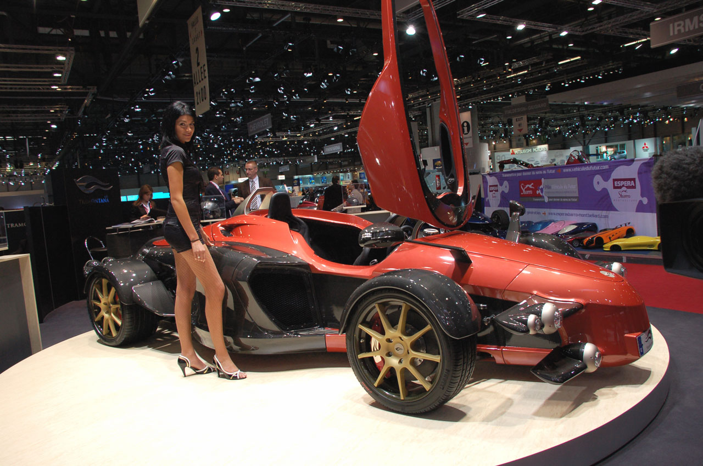
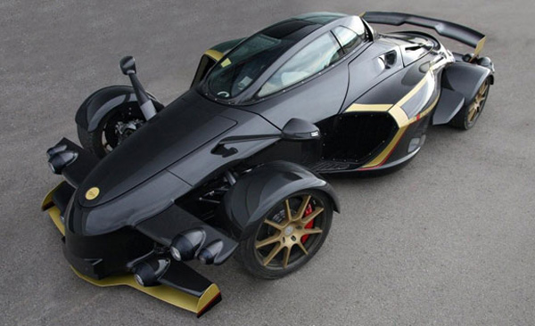

El tramuntana es va presentar al Saló de l'Automòvil de Ginebra al 2005, està pensat amb el disseny dels cotxes de Formula 1, qui l'encarregui el pot demanar amb 1 o 2 plaçes.
La seva velocitat màxima es de 325 km/h i pot accelerar de 0 a 100 en 3'7 segons.
Funcionament
Actualment hi han 5 versions del Tramontana:

- Té un motor V12 de 5,5 litres biturbo.
- La seva velocitat màxima es de 325km/h.
- La transmisió és manual, té 6 marxes.
Funcions i Prestacions

Aquest cotxe fa veure al món que en aquest país i més concretament en aquesta zona de Catalunya, també es fan coses exclusives i de qualitat.
Ens podria aportar, si te'l pots pagar, ja que el Tramontana R val més de 500.000€, exclusivitat i si t'agraden els cotxes, velocitat.